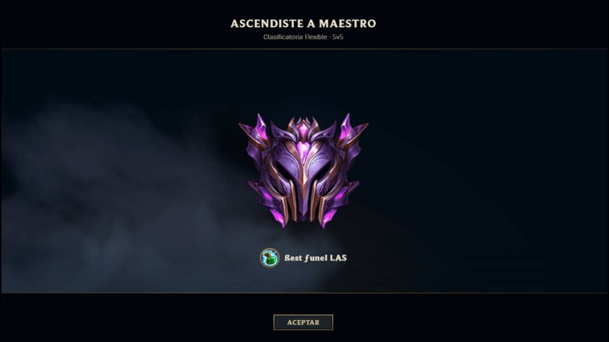

Clasificatoria Maestro.
Como salir de Maestro.
Esto es algo que muchos se preguntan, lo cierto es que existen jugadores con cierta habilidad para jugar a este tipo de juegos, pero si eres manco/a te proponemos que le dediques todo el tiempo que puedas, puesto que la práctica hace al maestro.
Si quieres saber cómo salir de bronce en el LOL, esfuérzate al máximo en todas las partidas. Para subir de liga tienes que jugar todas las partidas como si fuera la última, sobre todo si juegas en las clasificatorias.
Presta atención a todo lo que ocurre en el minimapa y a los movimientos de los contrincantes. Esto te ayudará a realizar acciones más rápidas y certeras. Es muy importante que aprendas a jugar con 2 campeones en cada rol. De esta forma, entenderás mejor el juego y sabrás cómo lidiar con ellos.
Otra de las cosas que hacer para cambiar de liga en lol es aprender las habilidades, destrezas y puntos débiles de todos los campeones. Esto te servirá para saber cómo jugarles cuando te toquen. Para ello, pruébales en partidas normales, no clasificatorias.
Estos son algunos consejos rapidos para subir a a Elo que estamos hablando a Maestro a Gran Maestro
Clasificatoria Gran Maestro